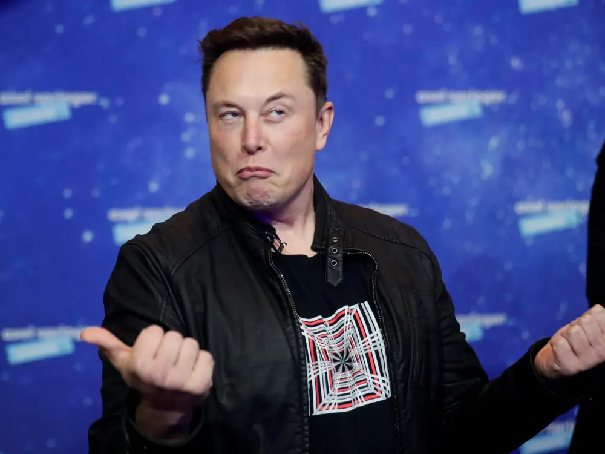

Найвідоміший та найбагатіший бізнес мен світу
Elon Musk

Головне про його життя
Ілон Рів Маск (англ. Elon Reeve Musk; нар. 28 червня 1971, Преторія, ПАР) — інженер, підприємець, винахідник, інвестор, мільярдер. Засновник компаній «SpaceX», «PayPal», Neuralink і The Boring Company, головний дизайнер (Chief Product Architect), генеральний директор і голова ради директорів «Tesla Inc.», що керує заводом Tesla. Входить до ради директорів компанії «SolarCity», заснованої його двоюрідними братами.
У 2015 році в інтерв'ю CNN Ілон Маск заявив, що його улюбленою ракетою-носієм є український «Зеніт».
У списку 100 найбагатших IT-мільярдерів 2017 року за версією «Forbes» посів 12-те місце, а із січня по листопад 2020 року завдяки зростанню ціни на акції «Tesla Inc.» він заробив $100,3 млрд і стрімко піднявся із 35-го на 2-ге місце у рейтингу «Bloomberg», володіючи $127,9 млрд.
Орієнтовно наприкінці 2020 — на початку 2021 року купив значну суму криптовалют — доги та біткоїнів на 1,5 млрд дол.
6 січня 2021 року став найбагатшою людиною у світі, обігнавши Джеффа Безоса: у цей день його статки склали 188,5 млрд доларів — це на 1,5 мільярда доларів більше, ніж у Безоса, який очолював топ багатіїв із 2017 року.
19 лютого 2021 року знову став найбагатшою людиною у світі, вдруге обігнавши Джеффа Безоса. Перед цим список багатіїв три дні очолював Безос. У той день статки Ілона зросли до 200 млрд доларів проти 194 в Безоса.
29 жовтня 2021 року «Bloomberg Billionaires Index» оприлюднив дані, відповідно до яких статки Ілона Маска перевищили 300 млрд доларів США — і це абсолютний світовий рекорд.
Особисте життя
Перша дружина, Джастін, вчилася з ним в тому самому університеті в Канаді. Вони одружилися у 2000 році, і в сім'ї з'явилося п'ятеро синів. У вересні 2008 Ілон і Джастін оголосили про сварку (розлучення?), а незабаром стало відомо, що Маск зустрічається з британською акторкою Талулою Райлі.
У 2010 році Ілон одружився з Талулою Райлі, церемонія одруження відбулася 25 вересня в кафедральному соборі міста Дорнокс[en] у Шотландії. У січні 2012 пара подала на розлучення. У липні 2013 року стосунки поновили, але 31 грудня 2014 року Маск знову подав на розлучення, виплативши дружині в цьо́му ви́падкові близько $16 млн, на відміну від першого разу — $4,2 млн.
У травні 2015 року опублікували біографію Ілона, яку написав американський бізнесовий колумніст Ешлі Венс. Українською книжка з'явилася вже наприкінці грудня того ж року. Переклад з англійської здійснила Мирослава Лузіна для видавництва ТАО.
Ще в 2013 році Маск познайомився з Ембер Герд на зйомках фільму «Мачете вбиває». У 2015 вона вийшла заміж за Джонні Деппа, і вже в 2016 розлучилася. Того ж року Маск почав з нею зустрічатися, за рік пара розлучилась.
7 травня 2018 року Маск та канадська співачка Ґраймз повідомили, що вони зустрічаються. 4 травня 2020 року у пари народився син, якого, за повідомленням Маска 5 травня, назвали «X Æ A-12». Наступного дня Ґраймз пояснила, що це ім'я означає. Мати Ілона Маска розповіла, що називає онука просто Еш.
13 листопада 2020 року заявив, що зробив 4 швидкі тести на коронавірус (антиген коронавірусу SARS-СоV-2). Із них два виявилися позитивними, а два — негативними. Також він заявив, що має симптоми застуди. Він планує зробити також тести ПЛР в різних лабораторіях.
У травні 2021 Ілон Маск заявив, що в нього синдром Аспергера.
Ілон Маск та Граймс розійшлися у вересні 2021 року.
Цікаві факти про Ілона Маска
Сина Ілона Маска звуть X Æ A-12
Батьківщина мільярдера — ПАР. Він народився 28 червня 1971 року в Преторії, звідки потім переїхав в Канаду, а після — США.
Свою першу компанію Ілон заснував у 24 роки, пожертвувавши навчанням у Стенфордському університеті. Через два дні після вступу він кинув програму “pH. D.” з фізики, щоб почати з братом роботу над Zip2 Corporation (довідник компаній).
Ілон Маск — прототип супергеройського кіноперсонажа Залізна людина. Характер, манера поведінки й мови Тоні Старка дісталися йому від відомого винахідника.
Ілон Маск є найбагатьшою людиною світу, а саме його бюджет становить 297 млрд "зелених"